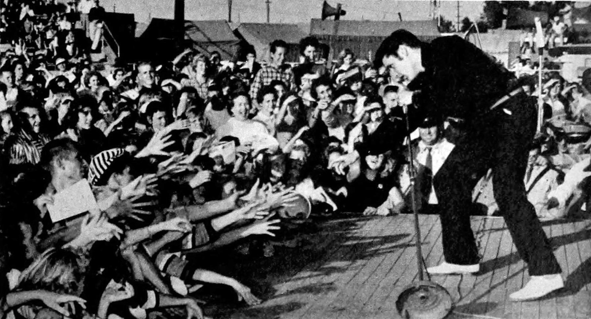

ELVIS
The King of Rock 'n' Roll

Elvis performing live at the Mississippi-Alabama Fairgrounds in Tupelo, Mississippi, September 26, 1956
The Elvis Timeline:
- 1935 - Elvis is born in Mississippi, USA
- 1946 - Elvis gets his 1st guitar on his 11th birthday
- 1953 - Elvis does his first recording
- 1954 - Elvis performs at his first live show
- 1955 - Elvis signs his contract with RCA Records
- 1956 - Elvis records his first self titled album
- 1957 - Elvis buys a home in Memphis and calls it Graceland
- 1958 - Elvis is drafted into the army
- 1960 - Elvis is honorably discharged from the army, when he returned he released the record-breaking album 'GI Blues'
- 1967 - Elvis gets married to Priscilla Wagner
- 1970 - Elvis meets President Richard Nixon at The White House
- 1971 - Elvis recieves the Lifetime Achievement Award
- 1977 - Elvis Presley dies
"I never expected to be anybody important."
- Elvis Presley